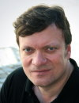

(www.tilmangrune.com)
Tilman Grune studied of Medical Biochemistry in Moscow, Russi. He graduated
at the Humboldt University Berlin (Charité), Germany, followed by
post-doc positions in Berlin, Germany, and Albany (NY), US, several faculty
positions in Berlin, Germany, and Düsseldorf, Germany, and full professorship
at the University of Hohenheim, Stuttgart, Germany. Now he is director
of the Institute of Nutrition of the Friedrich Schiller University and
full professor of nutritional toxicology. He is member of the SFFR-E board
and head of the German society for applied vitamin research.
He is co-Editor-in-Chief of the new open access journal REDOX BIOOGY and serves in addition to that on the editorial board of a number of journals, including Free Radic. Biol. Med. and Mol. Asp. Med.
Tilman Grune is member or chair of several European research activities including the the European COST network CM1001 on 'Nonenzymatic posttranslational protein modification'. The research is focused on the oxidative stress response of cells. The oxidative damage to proteins, the protection of proteins from oxidation and the fate of a protein if it is oxidized are major research topics. Therefore, various proteases and proteolytic systems for the ability to recognize and degrade oxidized proteins are investigated.